redis常见面试题
Redis常见的数据结构？
String、Hash、List、Set、ZSet
String 字符串类型
string类型是redis中最基本的数据类型，一个key对应一个value。
string类型是二进制安全的，意思是redis的string可以包含任何数据, 如数字, 字符串, jpg图片或者序列化的对象。
实战场景：
- 缓存： 经典使用场景，把常用信息，字符串，图片或者视频等信息放到redis中，redis作为缓存层，mysql做持久化层，降低mysql的读写压力。
- 计数器：redis是单线程模型，一个命令执行完才会执行下一个，同时数据可以一步落地到其他的数据源。
- session：常见方案spring session + redis实现session共享
Hash(哈希)
是一个Map，指值本身又是一种键值对结构，如 value={{field1,value1},......fieldN,valueN}}
实战场景
- 缓存： 能直观，相比string更节省空间，的维护缓存信息，如用户信息，视频信息等。
链表
List 说白了就是链表（redis 使用双端链表实现的 List），是有序的，value可以重复，可以通过下标取出对应的value值，左右两边都能进行插入和删除数据。
使用列表的技巧
- lpush+lpop=Stack(栈)
- lpush+rpop=Queue（队列）
- lpush+ltrim=Capped Collection（有限集合）
- lpush+brpop=Message Queue（消息队列）
实战场景
- timeline：例如微博的时间轴，有人发布微博，用lpush加入时间轴，展示新的列表信息。
Set 集合
集合类型也是用来保存多个字符串的元素，但和列表不同的是集合中
- 不允许有重复的元素
- 集合中的元素是无序的，不能通过索引下标获取元素
- 支持集合间的操作，可以取多个集合取交集、并集、差集。
实战场景
- 标签（tag）,给用户添加标签，或者用户给消息添加标签，这样有同一标签或者类似标签的可以给推荐关注的事或者关注的人。
- 点赞，或点踩，收藏等，可以放到set中实现
zset 有序集合
有序集合和集合有着必然的联系，保留了集合不能有重复成员的特性，区别是，有序集合中的元素是可以排序的，它给每个元素设置一个分数，作为排序的依据。
有序集合中的元素不可以重复，但是score 分数 可以重复，就和一个班里的同学学号不能重复，但考试成绩可以相同
实战场景
- 排行榜：有序集合经典使用场景。例如小说视频等网站需要对用户上传的小说视频做排行榜，榜单可以按照用户关注数，更新时间，字数等打分，做排行。
Redis持久化的原理及优化
原文作者: 大愚Talk
原文地址: 一文看懂Redis的持久化原理
Redis为持久化提供了两种方式：
- RDB：在指定的时间间隔能对你的数据进行快照存储。
- AOF：记录每次对服务器写的操作,当服务器重启的时候会重新执行这些命令来恢复原始的数据。
本文将通过下面内容的介绍，希望能够让大家更全面、清晰的认识这两种持久化方式，同时理解这种保存数据的思路，应用于自己的系统设计中。
- 持久化的配置
- RDB与AOF持久化的工作原理
- 如何从持久化中恢复数据
- 关于性能与实践建议
持久化的配置
为了使用持久化的功能，我们需要先知道该如何开启持久化的功能。
RDB的持久化配置
1 | 时间策略 |
配置其实非常简单，这里说一下持久化的时间策略具体是什么意思。
save 900 1表示900s内如果有1条是写入命令，就触发产生一次快照，可以理解为就进行一次备份save 300 10表示300s内有10条写入，就产生快照
下面的类似，那么为什么需要配置这么多条规则呢？
因为Redis每个时段的读写请求肯定不是均衡的，为了平衡性能与数据安全，我们可以自由定制什么情况下触发备份。所以这里就是根据自身Redis写入情况来进行合理配置。
stop-writes-on-bgsave-error yes 这个配置也是非常重要的一项配置，这是当备份进程出错时，主进程就停止接受新的写入操作，是为了保护持久化的数据一致性问题。
如果自己的业务有完善的监控系统，可以禁止此项配置，否则请开启
关于压缩的配置 rdbcompression yes，建议没有必要开启，毕竟Redis本身就属于CPU密集型服务器，再开启压缩会带来更多的CPU消耗，相比硬盘成本，CPU更值钱。
当然如果你想要禁用RDB配置，也是非常容易的，只需要在save的最后一行写上：save ""
AOF的配置
1 | 是否开启aof |
还是重点解释一些关键的配置：appendfsync everysec 它其实有三种模式:
- always：把每个写命令都立即同步到aof，很慢，但是很安全
- everysec：每秒同步一次，是折中方案
- no：redis不处理交给OS来处理，非常快，但是也最不安全
一般情况下都采用 everysec 配置，这样可以兼顾速度与安全，最多损失1s的数据。
aof-load-truncated yes 如果该配置启用，在加载时发现aof尾部不正确时，会向客户端写入一个log，但是会继续执行
如果设置为 no ，发现错误就会停止，必须修复后才能重新加载。
工作原理
关于原理部分，我们主要来看RDB与AOF是如何完成持久化的，他们的过程是如何。
在介绍原理之前先说下Redis内部的定时任务机制，定时任务执行的频率可以在配置文件中通过 hz 10 来设置（这个配置表示1s内执行10次，也就是每100ms触发一次定时任务）。
该值最大能够设置为：500，但是不建议超过：100，因为值越大说明执行频率越频繁越高，这会带来CPU的更多消耗，从而影响主进程读写性能。
定时任务使用的是Redis自己实现的 TimeEvent，它会定时去调用一些命令完成定时任务，这些任务可能会阻塞主进程导致Redis性能下降。
因此我们在配置Redis时，一定要整体考虑一些会触发定时任务的配置，根据实际情况进行调整。
RDB的原理
在Redis中RDB持久化的触发分为两种：自己手动触发与Redis定时触发。
针对RDB方式的持久化，手动触发可以使用：
- save：会阻塞当前Redis服务器，直到持久化完成，线上应该禁止使用。
- bgsave：该触发方式会fork一个子进程，由子进程负责持久化过程，因此阻塞只会发生在fork子进程的时候。
而自动触发的场景主要是有以下几点：
- 根据我们的
save m n配置规则自动触发； - 从节点全量复制时，主节点发送rdb文件给从节点完成复制操作，主节点会触发
bgsave； - 执行
debug reload时； - 执行
shutdown时，如果没有开启aof，也会触发。
由于 save 基本不会被使用到，我们重点看看 bgsave 这个命令是如何完成RDB的持久化的。
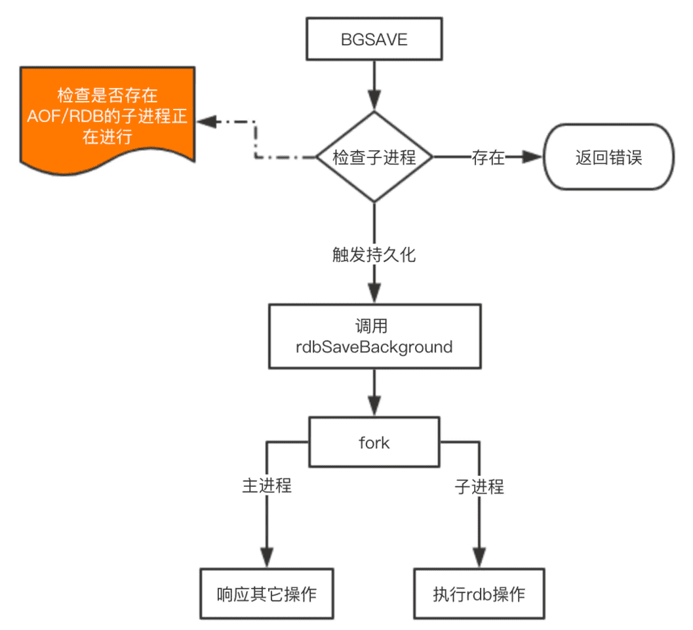
这里注意的是 fork 操作会阻塞，导致Redis读写性能下降。
我们可以控制单个Redis实例的最大内存，来尽可能降低Redis在fork时的事件消耗。
以及上面提到的自动触发的频率减少fork次数，或者使用手动触发，根据自己的机制来完成持久化。
AOF的原理
AOF的整个流程大体来看可以分为两步，一步是命令的实时写入（如果是 appendfsync everysec 配置，会有1s损耗），第二步是对aof文件的重写。
对于增量追加到文件这一步主要的流程是：命令写入->追加到aof_buf->同步到aof磁盘。
那么这里为什么要先写入buf在同步到磁盘呢？如果实时写入磁盘会带来非常高的磁盘IO，影响整体性能。
aof重写是为了减少aof文件的大小，可以手动或者自动触发，关于自动触发的规则请看上面配置部分。
fork的操作也是发生在重写这一步，也是这里会对主进程产生阻塞。
- 手动触发：
bgrewriteaof - 自动触发 就是根据配置规则来触发，当然自动触发的整体时间还跟Redis的定时任务频率有关系。
下面来看看重写的一个流程图：
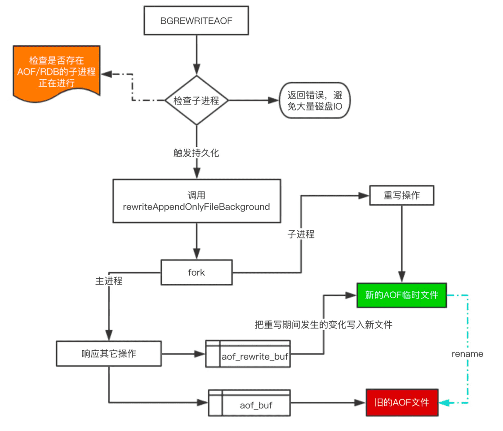
对于上图有四个关键点补充一下：
- 在重写期间，由于主进程依然在响应命令，为了保证最终备份的完整性；因此它依然会写入旧的AOF file中，如果重写失败，能够保证数据不丢失。
- 为了把重写期间响应的写入信息也写入到新的文件中，因此也会为子进程保留一个buf，防止新写的file丢失数据。
- 重写是直接把当前内存的数据生成对应命令，并不需要读取老的AOF文件进行分析、命令合并。
- AOF文件直接采用的文本协议，主要是兼容性好、追加方便、可读性高可认为修改修复。
不论是RDB还是AOF都是先写入一个临时文件，然后通过 rename 完成文件的替换工作。
从持久化中恢复数据
数据的备份、持久化做完了，我们如何从这些持久化文件中恢复数据呢？如果一台服务器上有既有RDB文件，又有AOF文件，该加载谁呢？
其实想要从这些文件中恢复数据，只需要重新启动Redis即可。我们还是通过图来了解这个流程：
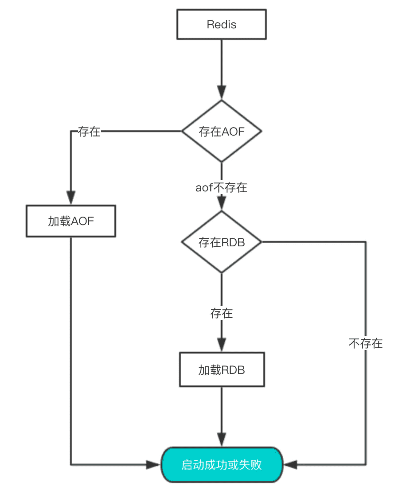
启动时会先检查AOF文件是否存在，如果不存在就尝试加载RDB。
那么为什么会优先加载AOF呢？因为AOF保存的数据更完整，通过上面的分析我们知道AOF基本上最多损失1s的数据。
新能与实践
通过上面的分析，我们都知道RDB的快照、AOF的重写都需要fork，这是一个重量级操作，会对Redis造成阻塞。因此为了不影响Redis主进程响应，我们需要尽可能降低阻塞。
- 降低fork的频率，比如可以手动来触发RDB生成快照、与AOF重写；
- 控制Redis最大使用内存，防止fork耗时过长；
- 使用更牛逼的硬件；
- 合理配置Linux的内存分配策略，避免因为物理内存不足导致fork失败。
在线上我们到底该怎么做？我提供一些自己的实践经验。
- 如果Redis中的数据并不是特别敏感或者可以通过其它方式重写生成数据，可以关闭持久化，如果丢失数据可以通过其它途径补回；
- 自己制定策略定期检查Redis的情况，然后可以手动触发备份、重写数据；
- 单机如果部署多个实例，要防止多个机器同时运行持久化、重写操作，防止出现内存、CPU、IO资源竞争，让持久化变为串行；
- 可以加入主从机器，利用一台从机器进行备份处理，其它机器正常响应客户端的命令；
- RDB持久化与AOF持久化可以同时存在，配合使用。
本文的内容主要是运维上的一些注意点，但我们开发者了解到这些知识，在某些时候有助于我们发现诡异的bug。
Redis主从复制
原文作者: 原来是咔咔
原文地址: 写给大忙人的Redis主从复制，花费五分钟让你面试不尴尬
相信很多小伙伴都已经配置过主从复制，但是对于redis主从复制的工作流程和常见问题很多都没有深入的了解。
什么是Redis主从复制
主从复制就是现在有俩台redis服务器，把一台redis的数据同步到另一台redis数据库上。
前者称之为主节点（master），后者为从节点（slave）。
数据是只能master往slave同步单向。
但是在实际过程中是不可能只有俩台redis服务器来做主从复制的，这也就意味这每台redis服务器都有可能会称为主节点（master）
下图案例中，我们的slave3既是master的从节点，也是slave的主节点。
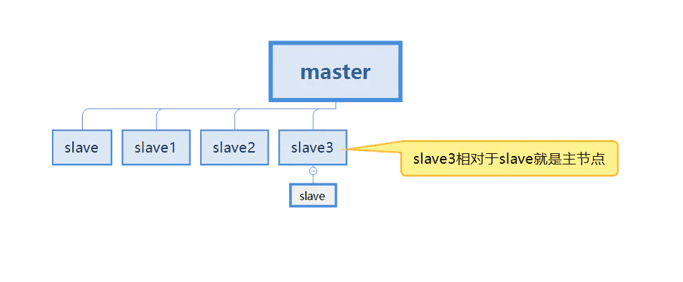
先知道这么个概念，更多详解继续查看下文。
为什么需要Redis主从复制
假设我们现在就一台redis服务器，也就是单机状态。
在这种情况下会出现的第一个问题就是服务器宕机，直接导致数据丢失。如果项目是跟￥占关系的，那造成的后果就可想而知。
第二个情况就是内存问题了，当只有一台服务器时内存肯定会到达峰值的，不可能对一台服务器进行无限升级的。
所以针对以上俩个问题，我们就多准备几台服务器，配置主从复制。
将数据保存在多个服务器上,并且保证每个服务器的数据是同步的。
即使有一个服务器宕机了，也不会影响用户的使用。redis可以继续实现高可用、同时实现数据的冗余备份。
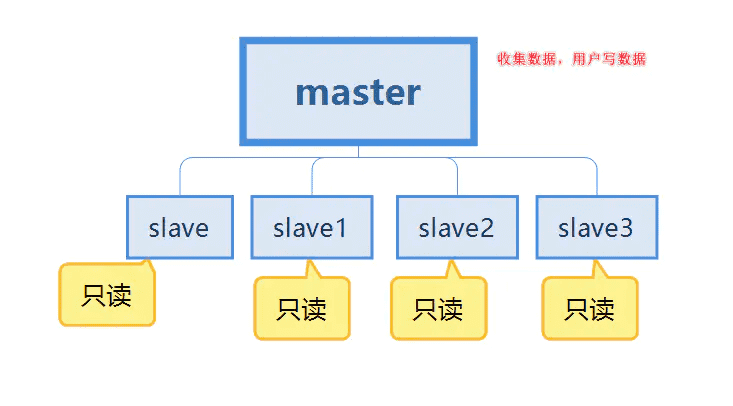
这会应该会有很多疑问，master跟slave怎么连接呢？ 如何同步数据呢？ 假如master服务器宕机了呢？别着急，一点一点解决你的问题。
Redis主从复制的作用
在上边我们说了为什么使用redis的主从复制，那么主从复制的作用就是针对为什么使用它来讲了。
我们继续使用这个图来谈论
- 第一点是数据冗余了，实现了数据的热备份，是持久化之外的另一种方式。
- 第二点是针对单机故障问题。当主节点也就是master出现问题时，可以由从节点来提供服务也就是slave，实现了快速恢复故障，也就是服务冗余。
- 第三点是读写分离，master服务器主要是写，slave主要用来读数据，可以提高服务器的负载能力。同时可以根据需求的变化，添加从节点的数量。
- 第四点是负载均衡，配合读写分离，有主节点提供写服务，从节点提供读服务，分担服务器负载，尤其在写少读多的情况下，通过多个从节点分担读负载，可以大大提高redis服务器的并发量和负载。
- 第五点是高可用的基石，主从复制是哨兵和集群能够实施的基础，因此我们可以说主从复制是高可用的基石。
配置Redis主从复制
从redis：
1 | slaveof <masterip> <masterport> |
主从复制工作原理
主从复制的三个阶段
主从复制完整的工作流程分为以下三个阶段。每一段都有自己的内部工作流程，那么我们会对这三个过程进行谈论。
- 建立连接过程：这个过程就是slave跟master连接的过程
- 数据同步过程：是master给slave同步数据的过程
- 命令传播过程：是反复同步数据
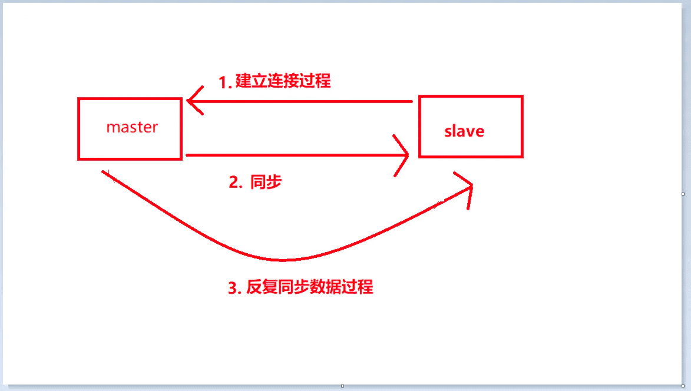
第一阶段：建立连接过程
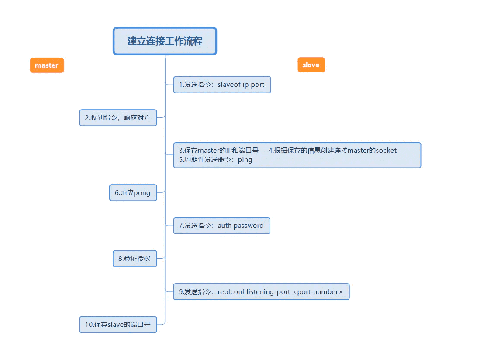
上图是一个完整主从复制建立连接工作流程。然后使用简短的话语来描述上边的工作流程。
- 设置master的地址和端口，保存master的信息
- 建立socket连接（这个连接做的事情下文会说）
- 持续发送ping命令
- 身份验证
- 发送slave端口信息
在建立连接的过程中，从节点会保存master的地址和端口、主节点master保存从节点slave的端口。
第二阶段：数据同步阶段过程
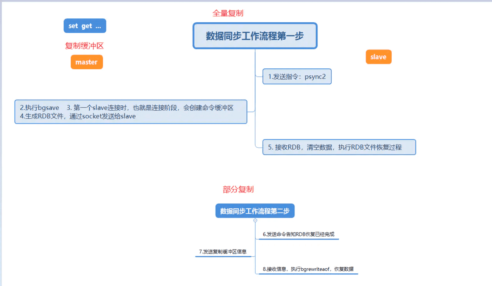
这张图是详细描述第一次从节点连接主节点时的数据同步过程。
当从节点第一次连接主节点时，先会执行一次全量复制这次的全量复制是无法避免的。
全量复制执行完成后，主节点就会发送复制积压缓冲区的数据，然后从节点就会执行bgrewriteaof恢复数据，这也就是部分复制。
在这个阶段提到了三个新点，全量复制、部分复制、复制缓冲积压区。会在下文的常见问题里详细说明这几个点。
第三阶段：命令传播阶段
当master数据库被修改后，主从服务器的数据不一致后，此时就会让主从数据同步到一致，这个过程称之为命令传播。
master会将接收到的数据变更命令发送给slave，slave接收命令后执行命令，让主从数据达到一致。
命令传播阶段的部分复制
- 在命令传播阶段出现断网的情况，或者网络抖动时会导致连接断开（connection lost）
- 这个时候主节点master还是会继续往replbackbuffer（复制缓冲积压区）写数据
- 从节点会继续尝试连接主机（connect to master）
- 当从节点把自己的runid和复制偏移量发送给主节点，并且执行pysnc命令同步
- 如果master判断偏移量是在复制缓冲区范围内，就会返回continue命令。并且发送复制缓冲区的数据给从节点。
- 从节点接收数据执行bgrewriteaof，恢复数据
详细介绍主从复制原理（全量复制+部分复制）
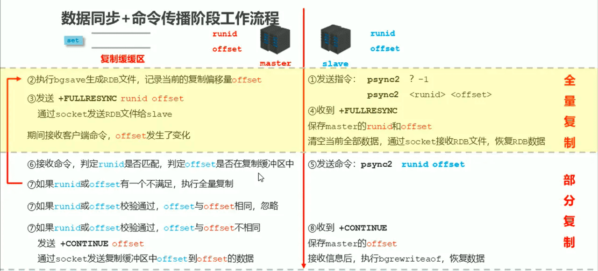
这个过程就是主从复制最齐全的流程讲解。那么下来我们对每一步进程简单的介绍
- 从节点发送指令
psync ? 1 psync runid offset找对应的runid索取数据。但是这里可以考虑一下，当从节点第一次连接的时候根本就不知道主节点的runid和offset。所以第一次发送的指令是psync ？ 1意思就是主节点的数据我全要。 - 主节点开始执行bgsave生成RDB文件，记录当前的复制偏移量offset
- 主节点这个时候会把自己的
runid和offset通过 +FULLRESYNC runid offset 指令 通过socket发送RDB文件给从节点。 - 从节点接收到+FULLRESYNC 保存主节点的
runid和offset然后清空当前所有数据，通过socket接收RDB文件，开始恢复RDB数据。 - 在全量复制后，从节点已经获取到了主节点的
runid和offset，开始发送指令psync runid offset - 主节点接收指令，判断
runid是否匹配，判断offset是否在复制缓冲区中。 - 主节点判断
runid和offset有一个不满足，就会在返回到步骤2继续执行全量复制。这里的runid不匹配只有的可能是从节点重启了这个问题后边会解决，offset（偏移量）不匹配就是复制积压缓冲区溢出了。 如果runid或offset校验通过，从节点的offset和主节点的offset相同时则忽略。 如果runid或offset检验通过，从节点的offset与offset不相同，则会发送 +CONTINUE offset(这个offset为主节点的)，通过socket发送复制缓冲区中从节点offset到主节点offset的数据。 - 从节点收到+CONTINUE 保存master的offset 通过socket接收到信息后，执行bgrewriteaof，恢复数据。
1-4是全量复制 5-8是部分复制
在主节点的第3步下面 主节点在主从复制的期间是一直在接收客户端的数据，主节点的offset是一直变化的。
只有有变化就会给每个slave进行发送，这个发送的过程称之为心跳机制
心跳机制
在命令传播阶段是，主节点与从节点之间一直都需要进行信息互换，使用心跳机制进行维护，实现主节点和从节点连接保持在线。
master心跳
- 指令：ping
- 默认10秒进行一次，是由参数repl-ping-slave-period决定的
- 主要做的事情就是判断从节点是否在线
- 可以使用info replication 来查看从节点租后一次连接时间的间隔，lag为0或者为1就是正常状态。
slave心跳任务
- 指令：replconf ack {offset}
- 每秒执行一次
- 主要做的事情是给主节点发送自己的复制偏移量，从主节点获取到最新的数据变更命令，还做一件事情就是判断主节点是否在线。
心跳阶段的注意事项
主节点为保障数据稳定性，当从节点挂掉的数量或者延迟过高时。将会拒绝所有信息同步。
这里有俩个参数可以进行配置调整：
1 | min-slaves-to-write 2 |
这俩个参数表示从节点的数量就剩余2个，或者从节点的延迟大于8秒时，主节点就会强制关闭master功能，停止数据同步。
那么主节点是如何知道从节点挂掉的数量和延迟时间呢！
在心跳机制里边slave 会每隔一秒发送perlconf ack 这个指令，这个指令可携带偏移量，也可以携带从节点的延迟时间和从节点的数量。
部分复制的三个核心要素
服务器的运行id（run id）
我们先看一下这个run id是什么，执行info命令即可看到。在上文中我们查看启动日志信息也可以看到。
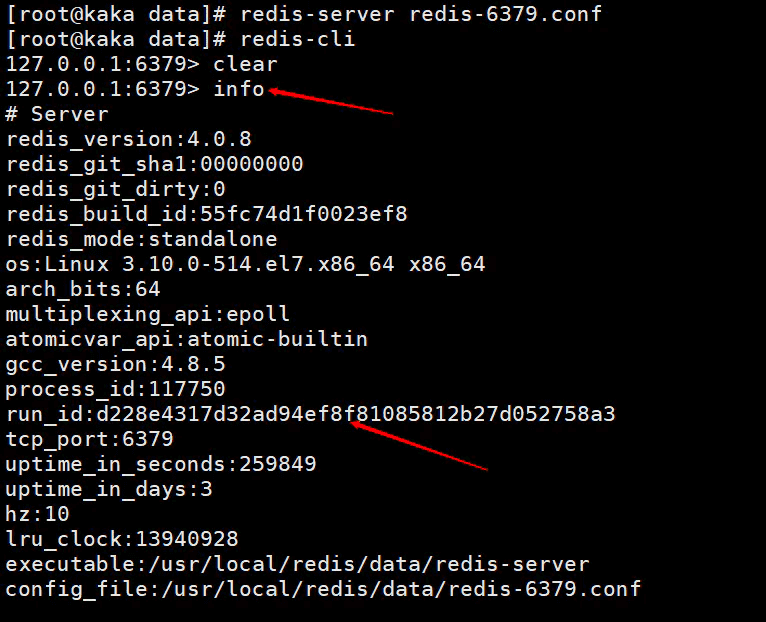
redis在启动时会自动生成一个随机的id（这里需要注意的是每次启动的id都会不一样），是由40个随机的十六进制字符串组成，用来唯一识别一个redis节点。
在主从复制初次启动时，master会把自己的runid发送给slave，slave会保存master的这个id，我们可以使用info命令查看
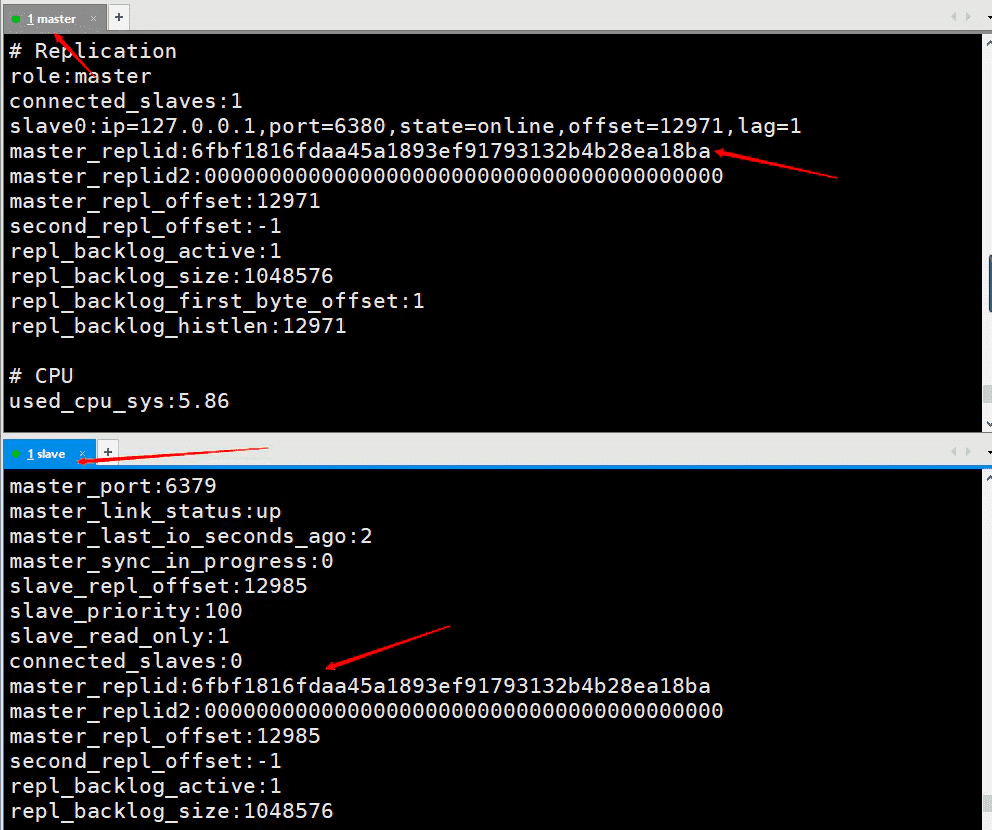
当断线重连时，slave把这个id发送给master，如果slave保存的runid与master现在的runid相同，master会尝试使用部分复制（这块能否复制成功还有一个因素就是偏移量）。
如果slave保存的runid与master现在的runid不同，则会直接进行全量复制。
复制积压缓冲区
复制缓冲积压区是一个先进先出的队列，用户存储master收集数据的命令记录。复制缓冲区的默认存储空间是1M。
可以在配置文件修改repl-backlog-size 1mb来控制缓冲区大小，这个比例可以根据自己的服务器内存来修改。
复制缓冲区到底存储的是什么？
复制积压缓冲区就是存储的aof持久化的数据，并且以字节分开，并且每个字节都有自己的偏移量。这个偏移量也就是复制偏移量（offset）
那为什么会说复制缓冲积压区有可能会导致全量复制呢
在命令传播阶段，主节点会把收集的数据存储到复制缓冲区中，然后在发送给从节点。
就是这里出现了问题，当主节点数据量在一瞬间特别大的时候，超出了复制缓冲区的内存，就会有一部分数据会被挤出去，从而导致主节点和从节点的数据不一致。
从而进行全量复制。如果这个缓冲区大小设置不合理那么很大可能会造成死循环，从节点就会一直全量复制，清空数据，全量复制。
复制偏移量（offset）
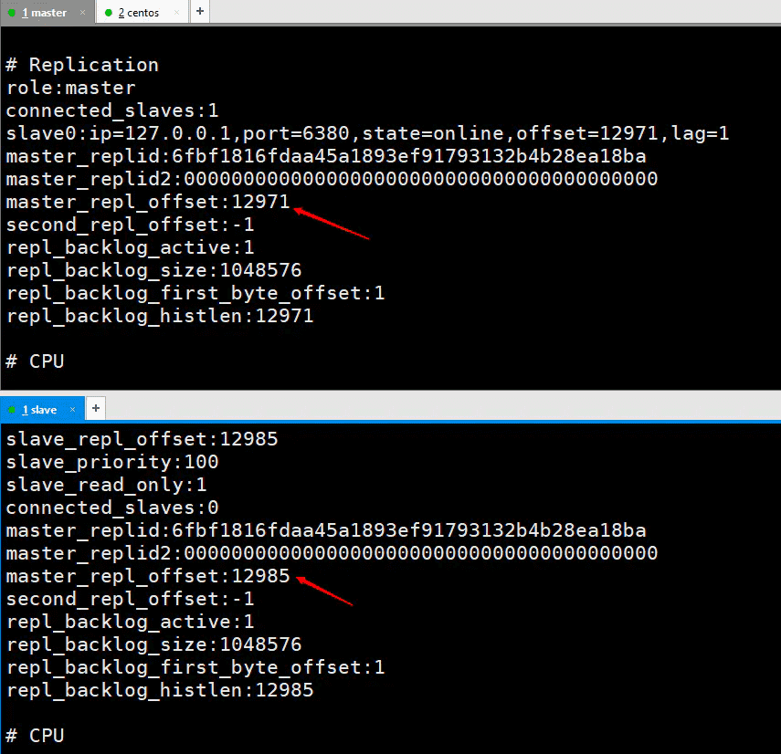
主节点复制偏移量是给从节点发送一次记录一次，从节点是接收一次记录一次。
用于同步信息，对比主节点和从节点的差异，当slave断联时恢复数据使用。
这个值也就是来自己于复制缓冲积压区里边的那个偏移量。
主从复制常见的问题
主节点重启问题（内部优化）
当主节点重启后，runid的值将发生变化，会导致所有的从节点进行全量复制。
这个问题我们无需考虑，知道系统是怎么优化的即可。
在建立完主从复制后主节点会创建master-replid变量，这个生成的策略跟runid一样，长度是41位，runid长度是40位，然后发送给从节点。
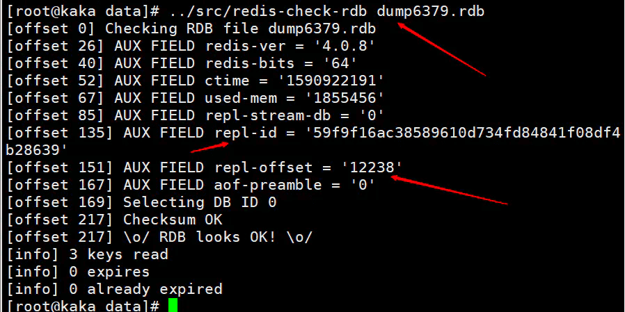
在主节点执行shutdown save命令时，进行了一次RDB持久化会把runid 和 offset保存到RDB文件中。可以使用命令redis-check-rdb查看该信息。
从节点网络中断偏移量越界导致全量复制
由于网络环境不佳，从节点网络中断。复制积压缓冲区内存过小导致数据溢出，伴随着从节点偏移量越界，导致全量复制。有可能会导致反复的全量复制。
解决方案：修改复制积压缓冲区的大小：repl-backlog-size
设置建议：测试主节点连接从节点的时间，获取主节点每秒平均产生的命令总量write_size_per_second
复制缓冲区空间设置 = 2 * 主从连接时间 * 主节点每秒产生的数据总量
频繁的网路中断
由于主节点的cpu占用过高，或者从节点频繁连接。出现这种情况造成的结果就是主节点各种资源被严重占用，其中包括但不限于缓冲区，宽带，连接等。
为什么会出现主节点资源被严重占用？
在心跳机制中，从节点每秒会发送一个指令replconf ack指令到主节点。
从节点执行了慢查询，占用大量的cpu
主节点每秒调用复制定时函数replicationCron，然后从节点长时间没有相应。
解决方案：
设置从节点超时释放
设置参数：repl-timeout
这个参数默认为60秒。超过60秒，释放slave。
数据不一致问题
由于网络因素，多个从节点的数据会不一致。这个因素是没有办法避免的。
关于这个问题给出俩个解决方案：
第一个数据需要高度一致配置一台redis服务器，读写都用一台服务器，这种方式仅限于少量数据，并且数据需高度一直。
第二个监控主从节点的偏移量，如果从节点的延迟过大，暂时屏蔽客户端对该从节点的访问。
设置参数为slave-serve-stale-data yes|no。这个参数一但设置就只能响应info slaveof等少数命令。
从节点故障
这个问题直接在客户端维护一个可用节点列表，当从节点故障时，切换到其他节点进行工作，这个问题在后边集群会说到。
总结
本文主要讲解了什么是主从复制、主从复制工作的三大阶段以及工作流程、部分复制的三大核心。
命令传播阶段的心跳机制。最后说明了主从复制常见问题。
耗时俩天写的文章，这也是咔咔最近耗时最长的一篇文章，以后咔咔发的文章估计都是这样的，不会在把一问题单独出多篇文章来讲解，会一篇文章全部说完。